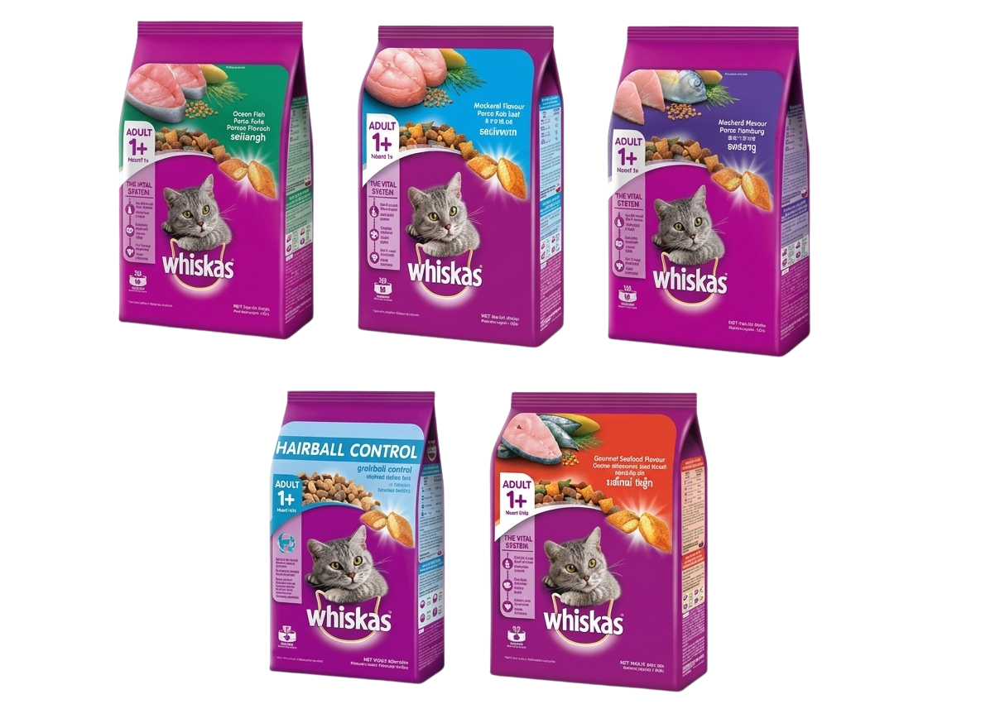
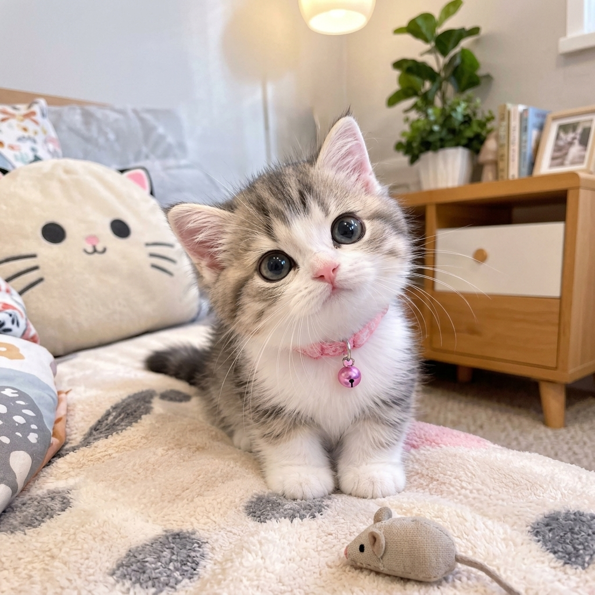
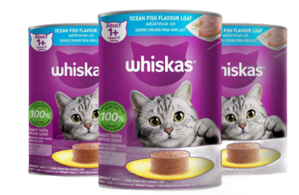
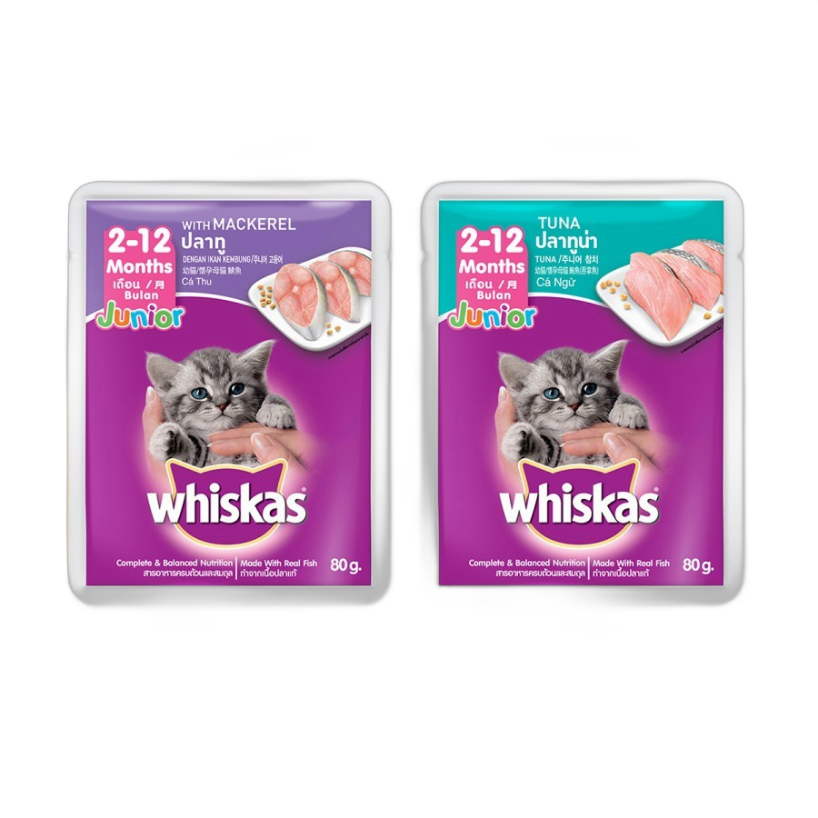
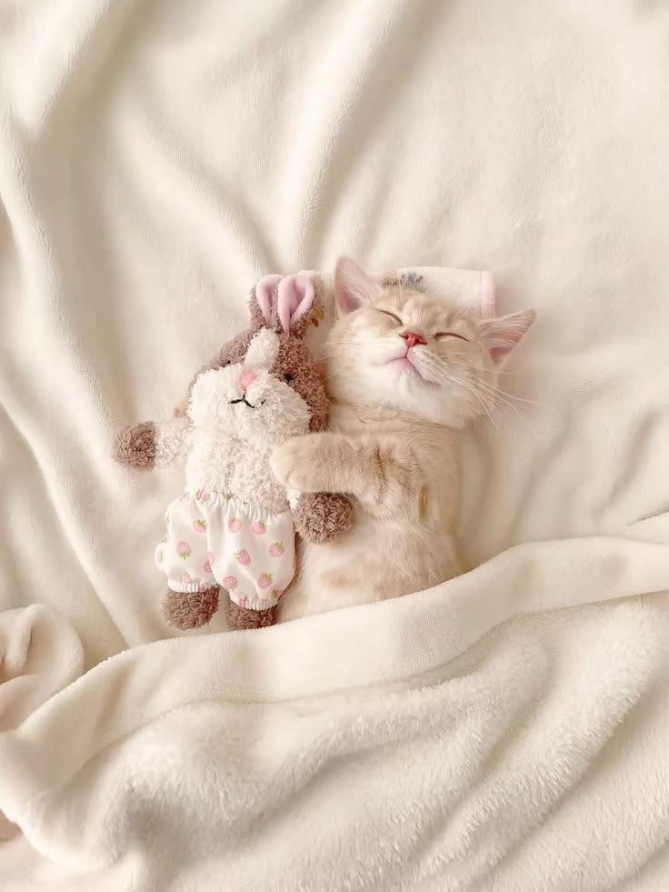

Gigitan kecil yang renyah
Inspirasi makanan harian untuk kucing dewasa.
Dari pagi yang penuh keceriaan hingga tidur siang yang nyaman, kami merayakan setiap momen istimewa bersama kucing. Temukan inspirasi makanan, tips perawatan, dan berbagai informasi menarik lainnya.
Kenali kisah kami →
Setiap gerakan kumis, lompatan ceria, dan dengkuran lembut merupakan bagian dari dunia mereka yang penuh keistimewaan.
Jelajahi dunia kucing ↗
Inspirasi makanan harian untuk kucing dewasa.

Tekstur lezat untuk selera kucing yang penuh rasa ingin tahu.

Jelajahi pilihan makanan untuk anak kucing yang sedang tumbuh.
Temukan ide sederhana untuk membuat hari-hari kucing kesayangan menjadi lebih menyenangkan.
Jelajahi perawatan kucing ↗
Rumah adalah tempat dengkuran berada.PENGINGAT KECIL UNTUK MENYAYANGI MEREKA SEPENUH HATI